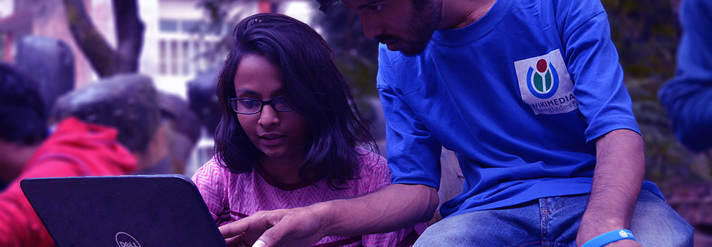

Initiatives
Sentiment & Perception
Understanding how our readers and contributors perceive and engage with our products, processes and tools
Overview
The Wikimedia Foundation Product Design and Strategy team has an ongoing series of studies aimed at understanding how our readers and contributors in different contexts use and perceive the interfaces they engage with - on desktop and mobile platforms. Included here are usability studies for new or improved features as well as more open-ended inquiries aimed at understanding how our users describe their expectations and perceive their experiences around finding content, reading, and contributing on Wikipedia.
Studies
-
Usability of the Wikipedia KaiOS app
The Inuka product team is developing a Wikipedia app for KaiOS feature phones. This team focuses on developing new experiences and new re-uses of wiki content for readers in emerging contexts. This research evaluates usability and user understanding of the basic app elements and workflows.
-
Searching on Commons: Structured Data Across Wikimedia
The SDAW program has created prototypes that reimagine searching for images on Wikimedia Commons. This project tests usability of prototypes and captures users’ expectations and desires in their search experiences on the wikis. -
Android App Suggested Edits
As part of the iterative participant testing and development for the app’s Section Editing feature, this project addresses user difficulties using and understanding the Contributions screens.
-
Readers’ Perceptions of Desktop Wikipedia
This study seeks to understand the experience and sentiment of new and casual readers on Wikipedia.
-
Micro-contributions on the Android App
This research studies the factors that motivate and retain Wikipedia editors who use the section editor tool on the Android app and how to increase their ability to successfully complete tasks using the tool.